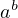

1. \Configure{[]} {before$$at-start} {at-end$$after},
\Configure{()}{before$at-start}{at-end$after}
\Configure{$$}{before}{after}{at-start}
\Configure{$}{before}{after}{at-start}
An equation:
 | \Configure{[]}{An equation: $$}{$$} \[a^b\] |
2. \Configure{SUB}{before}{after}
\Configure{SUP}{before}{after}
\Configure{SUBSUP}{before}{between}{after}
These commands configure subscripts appearing in isolation, superscripts given in isolation, and subscripts provided together with superscripts. If the last configuration command gets empty parameters, the corresponding cases use the settings that apply to isolated subscripts and superscripts.
The default setting results from
‘\Configure{SUB}{\HCode{<sub>}}{\HCode{</sub>}}’,
‘\Configure{SUP}{\HCode{<sup>}}{\HCode{</sup>}}’, and
‘\Configure{SUBSUP}{}{}’.
3. no_, no^
TeX4ht modifies the implementation of ‘_’ and ‘^’, to create hypertext subscripts and superscripts in non pictorial formulas—a modification that occasionally might clash with other interpretations in the source documents. The current package parameters ask TeX4ht not to modify the implementation of these commands, respectively.
Generated May 2, 2021 - tex4ht home page